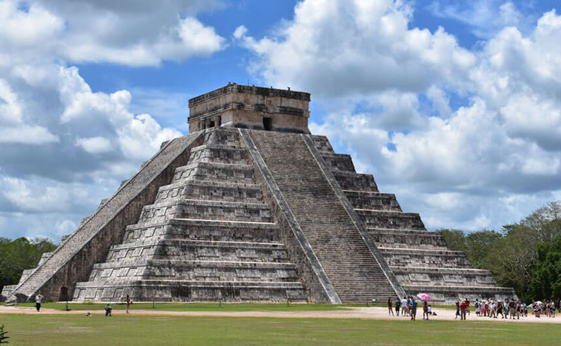

Descubre la maravilla de viajar por el mundo. ¡Haz clic para obtener más información!
Cancún es uno de los destinos turísticos más famosos y visitados de México. Parques de entretenimiento, cenotes, pirámides, actividades acuáticas, vivir la fiesta al máximo…
¡Todo para unas vacaciones de diez lo puedes encontrar aquí!
Atractivos Turísticos
-
Playas
-
Chichén Itzá
 -
Juego de la Pelota
-
Xcaret Park
Itinerario
Día 1:
Empieza el día en el ParqueXcaret, desde su apertura en la década de los 90s y con alrededor de un millón de visitantes al año, Xcaret es reconocido como una de las atracciones más famosas del mundo.
Día 2:
Recorriendo las ruinas mayas de Chichen Itzá, en la península de Yucatán existen varios sitios arqueológicos. Uno de los más importantes es Chichen Itzá.
Día 3:
Descubre Isla Mujeres de día y asiste al Cirque du Soleil por la noche
Día 4:
Ruinas mayas de Cobá. Cobá es una importante antigua ciudad maya diferente a otras.
Día 5:
De compras por Cancún y una noche para celebrar en el CoCoBongo